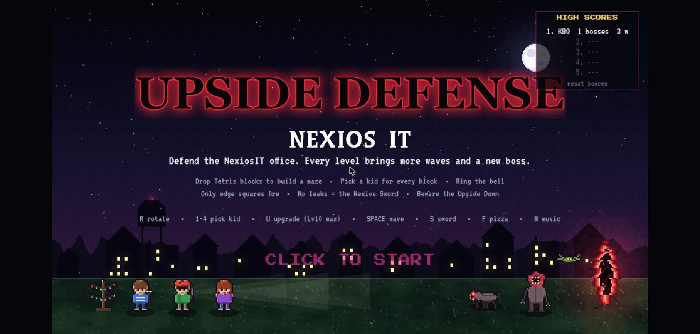
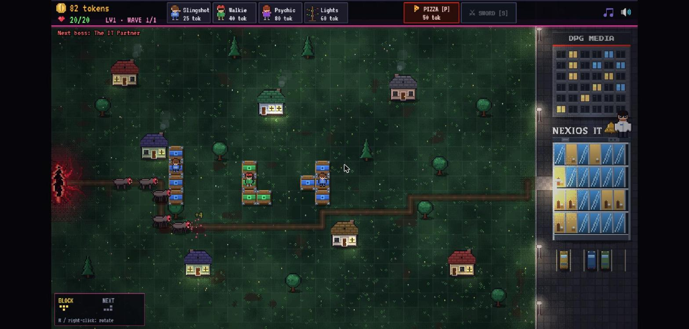
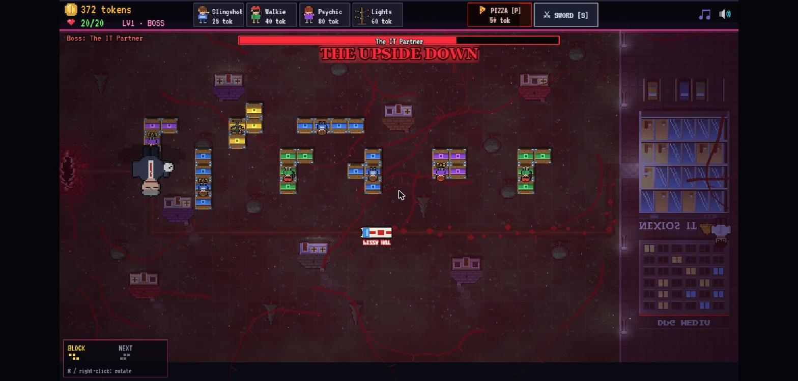
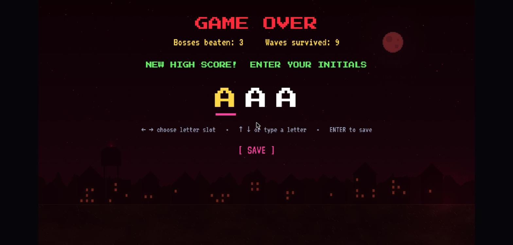
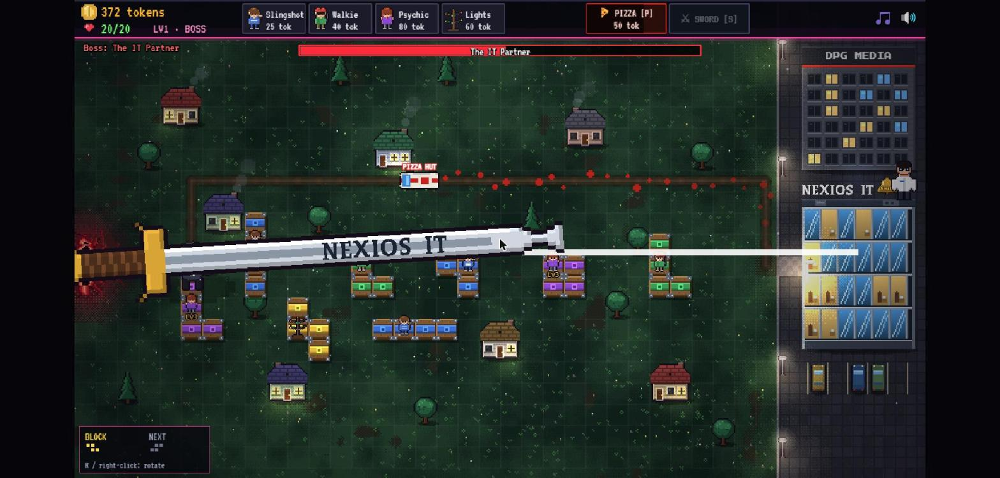
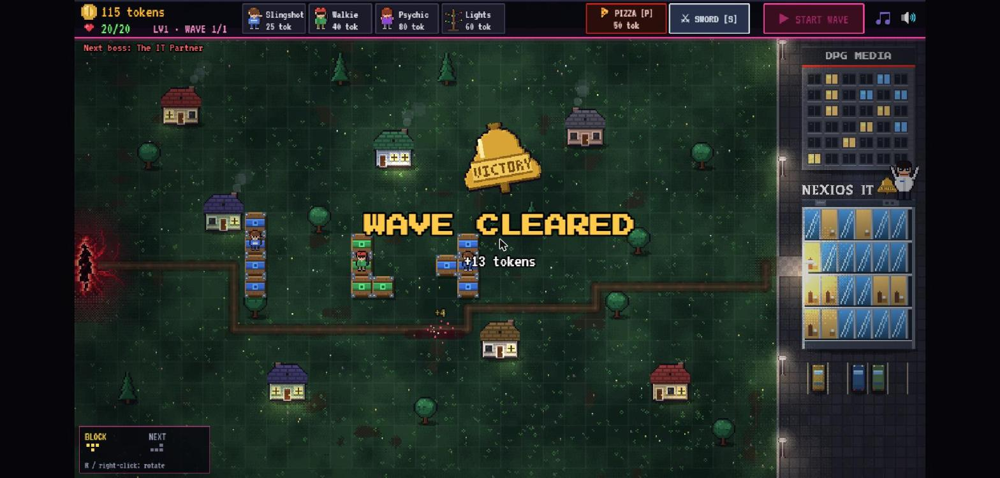
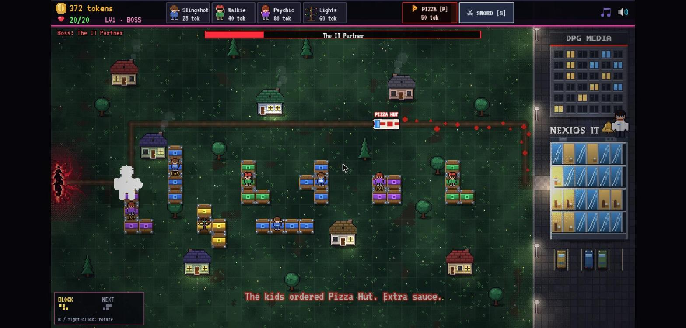
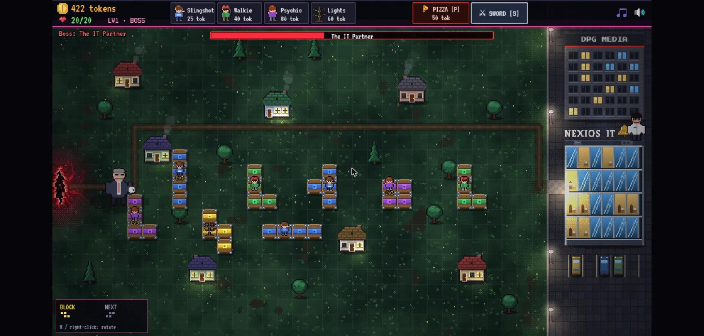
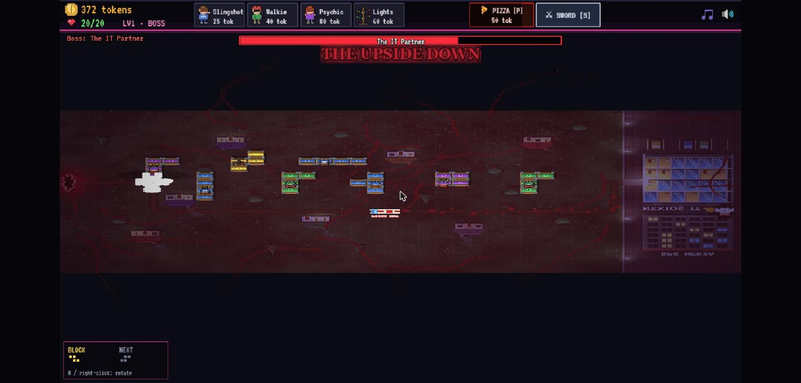

Upside Defense: build the maze, hold the office
A tower defence game built in one day. Monsters pour out of a Rift, and the only thing between them and the Nexios office is the maze you build from Tetris blocks.
Intent Engineering Bootcamp · Day 5 hackathon · 25 November 2026
— Look and feel
Pixel art from the 80s, drawn entirely in code

The title screen. Kids with flashlights on the left, the Rift on the right.
The first version was circles and blocks. It looked immature, so we replaced it with detailed pixel art.
A small pixel engine draws every sprite at low resolution, adds outlines and shading, then scales it up. The Nexios logo is the only image file.
A small town at night, inspired by Stranger Things. No names, characters or logos from the show.
An original synth track and every effect are generated in the browser.
— The twist
The twist was Tetris, so the towers became the maze
The first version had a fixed road. At 11:00 it made way for an open field where every tower is a Tetris block.
Blocks
Towers arrive as random Tetris blocks, dealt from a fair bag of the seven shapes. You see the current one and the next. Rotate, drop, then pick the kid who runs it.
Maze
Monsters find their own way around whatever you build. A drop that would close the last route is refused, so the path is never fully blocked.
Edges
Only the squares that touch open ground fire. Pack blocks together and the inner squares turn into stone walls.
The road version still runs at /classic/ as a fallback.
— Gameplay
One run, from the first block to the leaderboard
Start

160 tokens and 20 office health. Drop a few blocks, give each one a kid and press SPACE. Every monster you stop pays tokens.
Middle

Level N is N waves, then a boss. Kids upgrade to Lv10. From wave 3 the board can flip to the Upside Down for 25 seconds: tougher monsters and an inverted mouse.
Endgame

The run never ends in a win. Bosses return 50% tougher each lap until the office falls. Then your three initials go on the local top 10.
Your maze, kids and tokens carry over from level to level. Only the monsters reset.
— Nexios references
Three references you play with

The Nexios Sword
Clear a wave with zero leaks and the sword is yours. Press S and it sweeps the board. Bosses lose 15% of their health; everything else falls.

The victory bell
Rings on every cleared wave and pays the bonus: 10 tokens plus 3 per wave.

The Pizza Hut van
Press P and pay 50 tokens. It drives the route backwards and sprays sauce: 15 damage, 40% slower and 50% more damage taken for 4 seconds.
— Nexios references
And four more in the scenery and the cast
The base you defend is the Nexios IT office, with the real logo on the roof.
A familiar figure stands up there. He waves at the start, rings the bell for every cleared wave and jumps when a boss falls. No name is shown.
Eight IT parodies, from The IT Partner to The Big 5 IT. The Java Overlord and Sir .Net nod to our own practices. No real company or person appears.
The DPG Media building stands beside the office, as decoration.

The IT Partner arrives. The office, the roof and the neighbours are on the right.
— The new colleague
The new colleague added what a maze game was missing: selling a block
Its brief: start from a snapshot, work on its own branch, pick one missing feature, build it, test it and commit it. No questions allowed.
Sketch of the top bar with the new button.
Explore
Found the gap
The maze carries over for the whole run, yet a misplaced block could never be taken back.
Decide
60% back, not 100%
You get back 60% of everything spent, upgrades included. Blocks never become free walls.
Build
Press X to sell
The route is recomputed, and neighbours that were walled in start firing again.
Ship
16 new tests
114 pass. Committed and pushed to the new-colleague branch. Not in the live game yet.
— What makes it special
The feature we're proudest of: the board flips like a card

Caught mid-flip: the board turns bottom to top and shows its mirrored back.
Vines, ash and red lightning on the back of the board. While it's flipped, the mouse is inverted too.
Each has its own twist. The Agile Firm sprints for 1 second in every 4. The Cloud Consultant goes offline. Captain Service Bus drops off passengers.
Hover a block and a dashed line shows the detour the monsters would take, with the change in steps.
Three initials on a local top 10, like an 80s cabinet.
— In numbers
One day, one browser tab, no build step
Everything here was built on 25 November 2026 and runs from a single link.
The rules live apart from the drawing code and are tested on their own. That is why a new colleague could add a feature and prove it in one sitting.
Source: repository kbo-nexiosit/Nexios-Tower-Defense, 25 November 2026
— Where to play it
Play it →
kbo-nexiosit.github.io/Nexios-Tower-Defense
Desktop browser, keyboard and mouse. No install and no sign-up. The link follows in the chat right after this presentation.
Nexios Consulting Group NV · Medialaan 36, 1800 Vilvoorde · VAT BE 0478.895.136